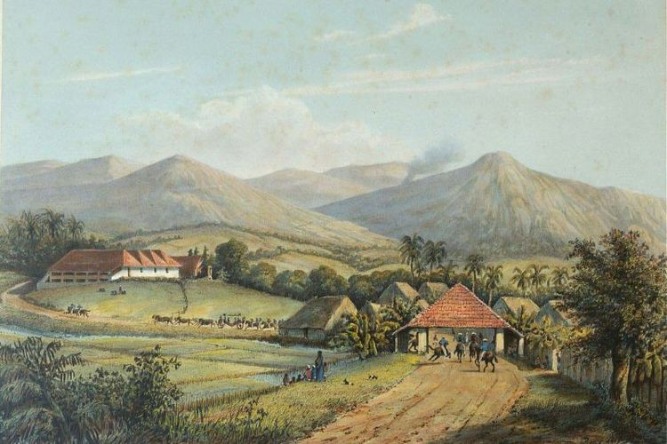
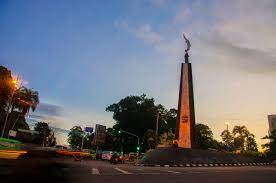

Kota Bogor adalah salah satu kota yang terletak di Provinsi Jawa Barat, Indonesia. Kota Bogor memiliki banyak julukan salah satunya adalah Kota Hujan, julukan tersebut didapat kota Bogor karena curah hujan Kota Bogor lumayan tinggi. Kota Bogor terdiri dari 6 kecamatan dengan 68 kelurahan. Kota Bogor telah mengalami banyak perubahan dan senantiasa mengalami perkembangan.
 Menurut Penelitian Scipio dan Riebeeck pada tahun 1687 terhadap Batutulis dan beberapa situs lainnya, mereka menyimpulkan bahwa pusat pemerintahan Kerajaan Pajajaran terletak di Kota Bogor. pada tahun 1745 Gubernur Jenderal Gustaaf Willem Baron van Imhoff membangun Istana Bogor seiring dengan pembangunan Jalan Raya Daendels yang menghubungkan Jakarta dengan Bogor. Bogor direncanakan sebagai sebagai daerah pertanian dan tempat peristirahatan bagi Gubernur Jenderal. Dengan pembangunan-pembangunan ini, wilayah Bogor pun mulai berkembang. Pada masa pendudukan Inggris, yang menjadi Gubernur Jendralnya adalah Thomas Stamford Raffles, beliau cukup berjasa dalam mengembangkan Kota Bogor, dimana Istana Bogor direnovasi dan sebagian tanahnya dijadikan Kebun Raya (Botanical Garden), beliau juga mempekerjakan seorang arsitek yang bernama Carsens yang menata Bogor sebagai tempat peristirahatan yang dikenal dengan Buitenzorg.
Pada tahun 1903, terbit Undang-undang Desentralisasi yang bertujuan menghapus sistem pemerintahan tradisional diganti dengan sistem administrasi pemerintahan modern sebagai realisasinya dibentuk Staadsgemeente diantaranya adalah.
Pembentukan Gemeente tersebut bukan untuk kepentingan penduduk Pribumi tetapi untuk kepentingan orang-orang Belanda dan masyarakat Golongan Eropa dan yang dipersamakan (yang menjadi Burgermeester atau Wali kota dari Staatsgemeente Buitenzoorg selalu orang-orang Belanda dan baru tahun 1940 diduduki oleh orang Bumiputra yaitu Mr. Soebroto). Pada tahun 1922 sebagai akibat dari ketidakpuasan terhadap peran desentralisasi yang ada, maka terbentuklah Bestuursher Voorings Ordonantie atau Undang-undang perubahan tata Pemerintahan Negeri Hindia Belanda (Staatsblad 1922 No. 216), sehinga pada tahun 1922 terbentuklah Regentschaps Ordonantie (Ordonantie Kabupaten) yang membuat ketentuan-ketentuan daerah Otonomi Kabupaten (Staatsblad 1925 No. 79).
Provinsi Jawa Barat dibentuk pada tahun 1925 (Staatsblad 1924 No. 378 bij Propince West Java) yang terdiri dari 5 Keresidenan, 18 Kabupaten (Regentscape) dan Kotapraja (Staads Gemeente), dimana Buitenzorg (Bogor) salah satu Staads Gemeente di Provinsi Jawa Barat di bentuk berdasarkan (Staatsblad 1905 No. 208 jo. Staatsblad 1926 No. 368), dengan prinsip Desentralisasi Modern, dimana kedudukan Burgermeester menjadi jelas.
Pada masa pendudukan Jepang kedudukan pemerintahan di Kota Bogor menjadi lemah karena pemerintahan dipusatkan pada tingkat keresidenan yang berkedudukan di Kota Bogor, pada masa ini nama-nama lembaga pemerintahan berubah namanya yaitu: Keresidenan menjadi Syoeoe, Kabupaten/Regenschaps menjadi Ken, Kota/Staads Gemeente menjadi Si, Kewedanaan menjadi/Distrik menjadi Gun, Kecamatan/Under Districk menjadi Soe dan desa menjadi Koe.
 Setelah kemerdekaan Indonesia, berdasarkan Peraturan Presiden Nomor 22 Tahun 1963 Kota Bogor menjadi otonomi dibawah kabupaten, membuat nomenklatur Kota Bogor berubah namanya menjadi Kota Besar Bogor yang dibentuk berdasarakan Udang-undang Nomor 16 Tahun 1950. pada tahun 1957 nama pemerintahan berubah menjadi Kota Praja Bogor, sesuai dengan Undang-undang Nomor. 1 Tahun 1957. berubah kembali menjadi Kotamadya Daerah Tingkat II Bogor, sesuai dengan Undang-undang Nomor 18 tahun 1965 dan Undang-undang No. 5 Tahun 1974. Dengan diberlakukanya Undang-undang Nomor 22 Tahun 1999, Kotamadya Daerah Tingkat II Bogor diubah menjadi Kota Bogor.
| Jabatan | Nama | Foto |
| Walikota Bogor | Bima Arya Sugiarto | |
|---|---|---|
| Wakil Walikota Bogor | Dedie A. Rachim |
Kunjungi Perpustakaan dan Galeri Kota bogor untuk informasi lebih lanjut Klik disini baca juga disini